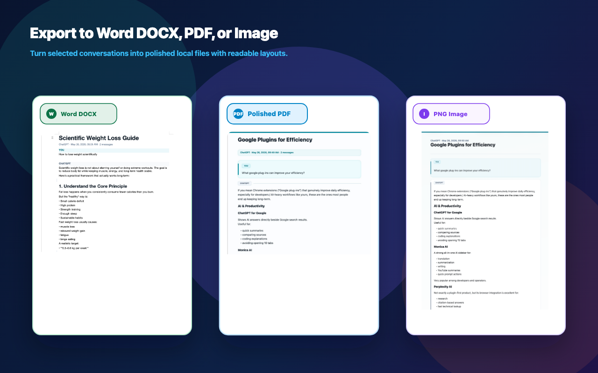

Export structured answers without rebuilding them by hand.
Headings, lists, tables, code blocks, quotes, and image references are preserved for cleaner handoff.
Export ChatGPT, Claude, and Gemini conversations to PDF, Docs, MD and More with local processing and clean layouts.
The Chrome listing is not public yet. Early users can request access by email.

AI Chat Export keeps the product boundary simple: select useful AI output, check export risk, generate a local file, and keep a receipt.
Headings, lists, tables, code blocks, quotes, and image references are preserved for cleaner handoff.
Filter user prompts and turn multi-turn answers into a cleaner report for research, tutorials, and client notes.
Pick full conversations, selected messages, AI replies only, or a single answer before export.
Attach platform, source URL, export time, format, message count, and checksum details for easier review.
Attach platform, source URL, export time, format, message count, and local-generation proof for easier review.
Long conversations, code blocks, images, and partially loaded pages are checked before the file is generated.
Choose full thread, AI-only report, selected messages, or one answer.
Spot long content, image issues, unloaded messages, and PNG height limits.
Build PDF, Docs, MD and More in the browser with your selected theme.
Download the file with source details and an export receipt when needed.
AI Chat Export is built for reports, research notes, project handoff, and archives that need to stay readable.
The extension reads the current page only when you ask it to export. Chat message bodies are not sent to ChatVault servers for conversion.
Free preview keeps the core workflow available. Pro unlocks higher limits, more themes, and clean delivery files.
For testing the workflow before the public Chrome release.
For people turning AI output into research, client documents, and reusable archives.
AI Chat Export is an independent assistant extension and is not affiliated with OpenAI, Anthropic, Google, ChatGPT, Claude, or Gemini.